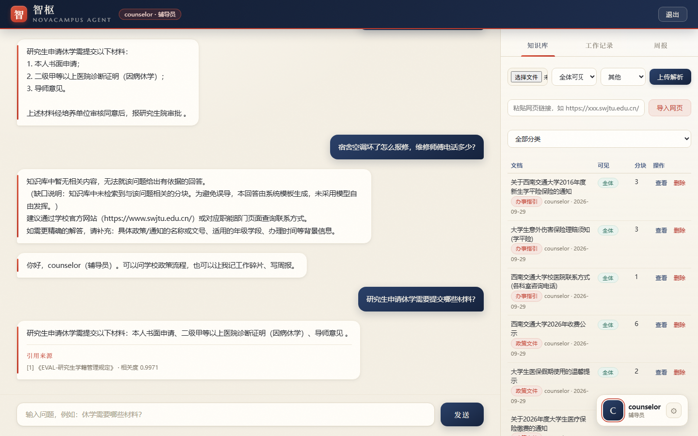
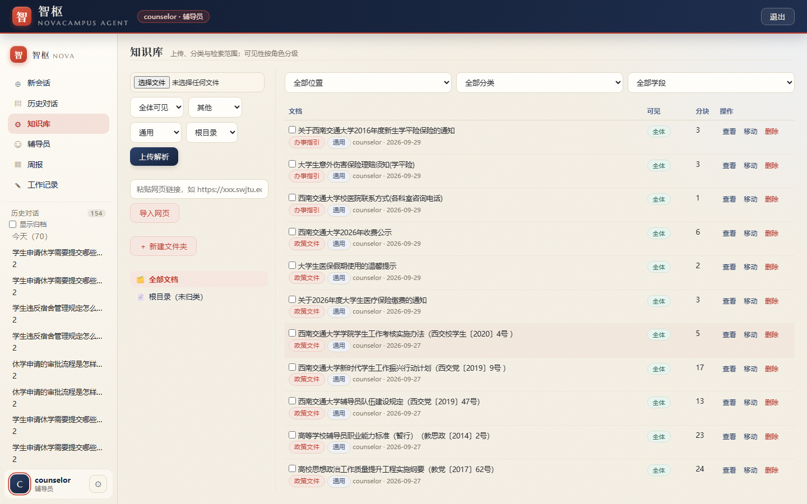
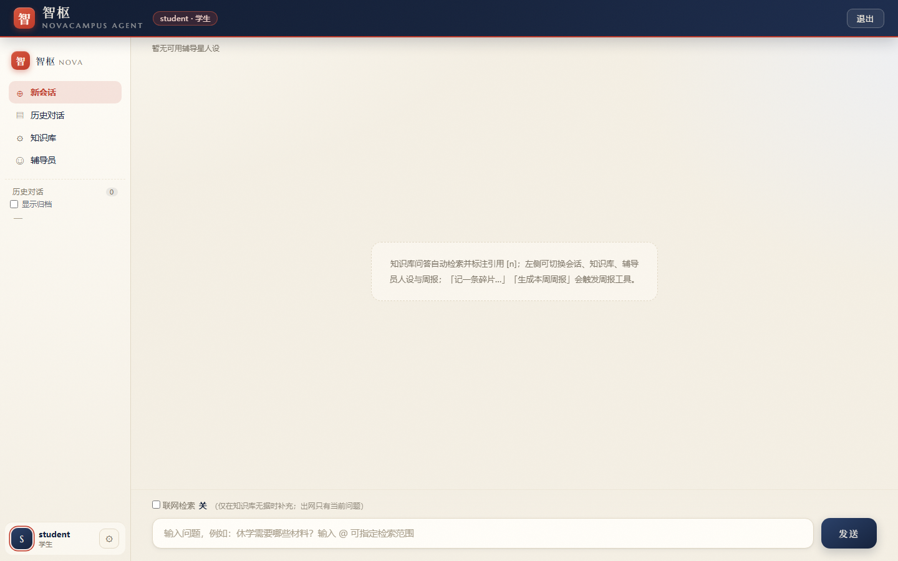
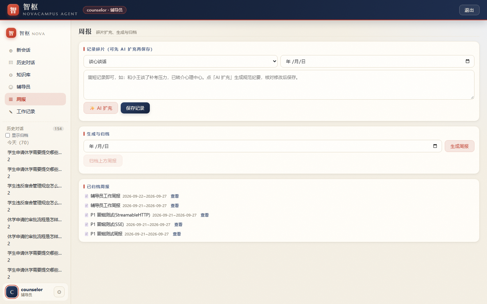
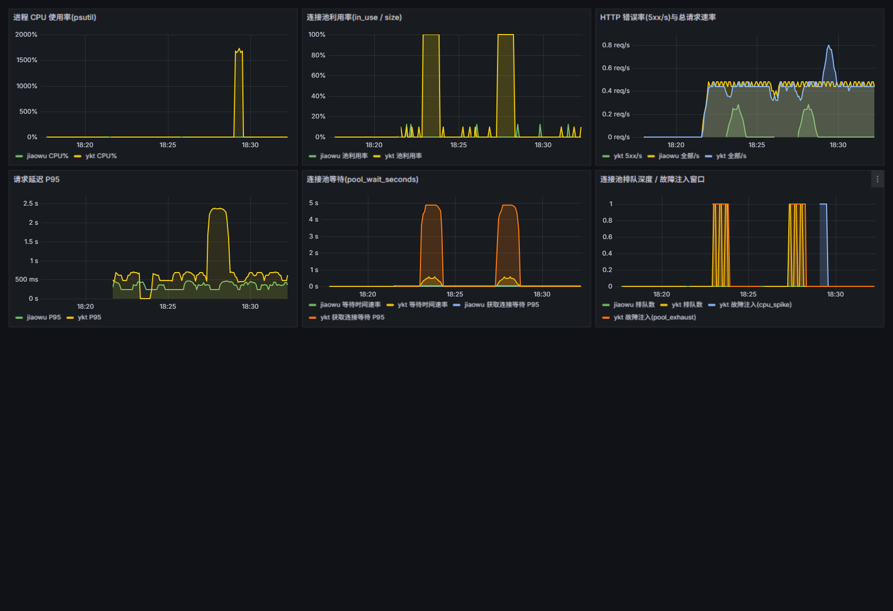

STUDENT
学生 · 带引用的政策问答
混合检索命中后按句标注 [n]，点开可看命中的知识库分块原文与相关度分数。
研究生申请休学要交哪些材料？
→ 答完附来源《研究生学籍管理规定》· 相关度 0.9971
智枢 Agent 把「政策问答 / 辅导员周报 / 系统故障诊断」装进一个能跑在自己电脑上的系统。 它最花力气的地方不是回答得多流畅，而是 检索不到证据时，代码直接接管、不让模型开口—— 四层门控 + 59 条公开评测用例，把「不瞎编」做成可验证的工程约束。
Python 3.12 + 两个模型 Key（都有免费额度）· 不需要 Docker / Node / GPU / 云服务器 · MIT
一个问询台，三种身份
校园里的「万能问询台」：学生问政策要引用，辅导员记碎片出周报，校管理员看告警找根因。 同一套检索与权限内核，按角色给出不同的入口与可见范围。
STUDENT
混合检索命中后按句标注 [n]，点开可看命中的知识库分块原文与相关度分数。
研究生申请休学要交哪些材料？
→ 答完附来源《研究生学籍管理规定》· 相关度 0.9971
COUNSELOR
随手记一句 → AI 扩充成规范纪要 → 自动分类归整 → 结构化周报 → 归档回灌知识库。周报能力经 MCP 协议由独立服务提供。
和小王谈了补考压力，建议他规划复习。
→ 周末一键生成本周概览 + 分类条目
ADMIN
对接模拟校园系统的 Prometheus 指标与容器日志：告警 → 取证 → 根因 → 中文诊断报告。
一卡通系统连接池耗尽，为什么？
→ 独立 MCP Server，尚未接入主对话流程（路线图 P3c）
真实界面 · 非设计稿
零构建前端：原生 HTML / CSS / JS，无 package.json、无打包步骤。
工作记录类页面含真实事务描述，未放入本页。

[1]《研究生学籍管理规定》· 相关度 0.9971；上方报修电话一问，直接返回系统模板 + 缺口说明，右侧知识库面板可见分块与可见性标记。



核心设计 · 四层防线
大模型答政策问题最大的风险不是「答不出」，而是答错了还很自信。 这四层不是 prompt 里的叮嘱，是可单测、可复现、可被评测打分的代码路径。
三种硬条件任一命中即返回系统模板，不经过模型自由生成。
检索为空 || top_rerank < 阈值
|| 达标分块 < 2 → 拒答
答案里出现 [7] 但只检索到 3 条来源？代码删掉这个编号，并自动记一条 bad case。
ref > len(sources) → strip()
+ badcases.json 追加
边生成边检查：整段回答里一个引用编号、一个数字都没有（在说空话），就重新生成一次。
NOVA_GROUNDING_GATE=1
scope: factual_turns | all_turns
本地有据时不出网；出网时只发送当前问题文本，绝不携带知识库内容、会话历史或个人信息。
body keys = model / input /
tools / tool_choice ← 有探针守着
检索链路
一条提问请求在落到模型之前要过的关卡。每一步的耗时、命中数、最高重排分都会写进 retrieval_trace，评测时逐条可查。
@ 指定本次检索范围（文件夹多选），把「问哪一份文件」交给用户。NOVAAGENT_EVAL_TEMPERATURE），保证分数可复现。权限模型
三级角色 × 文档级可见性。即使绕过界面直接调 API，学生也只会拿到 403；
被过滤掉的文档连检索结果都不会出现（kb_hidden 用例专门守这条）。
| 能力 | 学生 student | 辅导员 counselor | 校管理员 admin |
|---|---|---|---|
| 带引用政策问答 | ✓ | ✓ | ✓ |
| 知识库浏览（按可见性过滤） | 只读 ✓ | ✓ | 最广范围 ✓ |
| 上传 / 解析 / 删除文档 | ✕ 403 | ✓ | ✓ |
| 文档可见性设为「仅管理员」 | ✕ | ✓ 可设 | ✓ |
| 周报 / 工作记录入口 | ✕ 入口隐藏 + 接口 403 | ✓ | ✓ |
| 辅导员人设（全校可用 / 仅自己） | 使用 ✓ | 创建 ✓ | ✓ |
案例研究 · 最有价值的一份文档
一个 26 用例全过、拒答准确率 1.0、忠实度 1.0 的 RAG 系统，
被一线辅导员的三个真实学生提问当场打回原形。
而所有指标对此完全失明。这份 docs/CASE_STUDY.md 记录的是「发现 → 量化归因 → 反向改造验收标准」的全过程，
过程中还证伪了作者自己先前提出的两个解释。文中数字全部可复现。
知识库里没有，它照样答，还标了引用编号。
sources = []（零来源）却给出 5 步办理流程、材料清单、具体 APP 名称，句末标注 [1]——一个不存在的引用。
失守不随机。6 个问法的对照实验显示：与问句的情境丰富度正相关—— 越像真实用户会打的字，越容易被模型当成「可回答的通用问题」。
为什么指标看不见？6 条 refusal 用例全是「今天天气怎么样」「微信的创始人是谁」这类
域外问题。真正危险的「校园域内、但库里恰好没有」，一条用例都没有——所以拒答准确率长期 1.0。
不是加 prompt 规则，而是补评测集与验收项。
新增 refusal_indomain 6 条 + 追问拒答、历史假前提、多轮、上下文压缩等用例，把结论反向写进验收标准。
质量闭环
最新一轮（v2.5，2026-10-02）：58 / 59 通过。
唯一的失败是 ss-03：它要验证 grounding 闸门，但运行时闸门未启用，属于「无法证明」而非「验证不通过」——报告里原样留着，不做粉饰。
另有 evals/dashboard.html 看板与 docs/BADCASES.md 失败追踪。
自托管
对话模型用阿里云百炼 qwen-flash，向量与重排用硅基流动 bge-m3 / bge-reranker-v2-m3，
注册后的免费额度就够跑通全部示例。不需要 Docker、Node.js、GPU、云服务器。
data/ 不随仓库分发。第一次提问会返回「知识库中暂无相关内容」——这说明拒答门控在工作，不是装坏了。
上传一篇政策文档，就能看到带 [n] 引用的回答。
source_url 与 doc_date，可逐篇追溯。已知限制
宣传页最容易撒谎的地方就是「只说做到的」。以下是当前确实未完成的部分。
student / counselor / admin 仅供本地演示，不要暴露到公网。--throttle-ms 3000~5000。